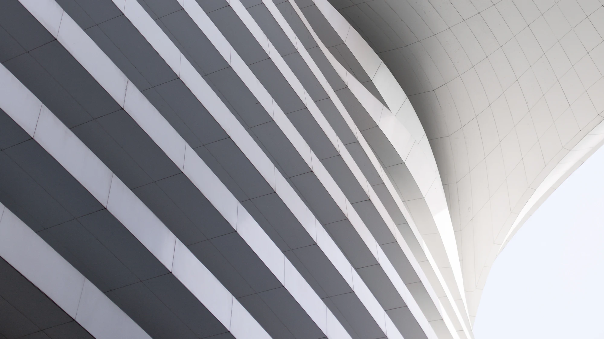
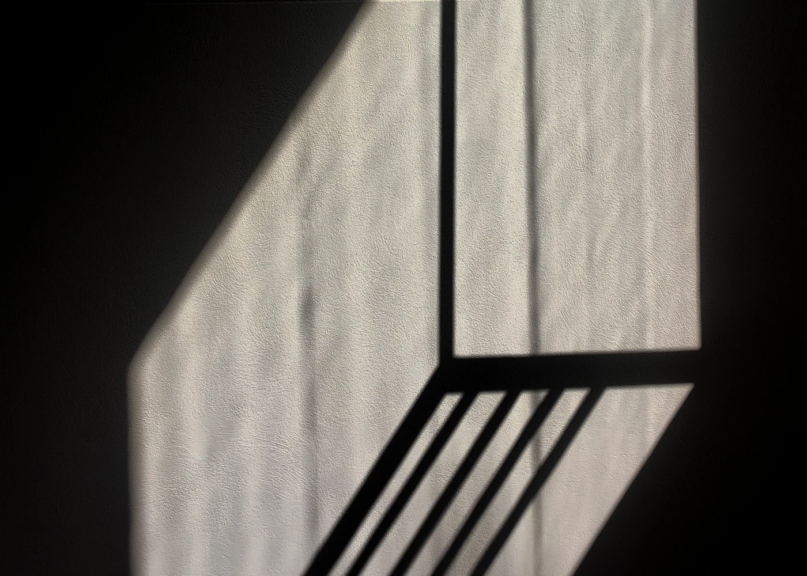
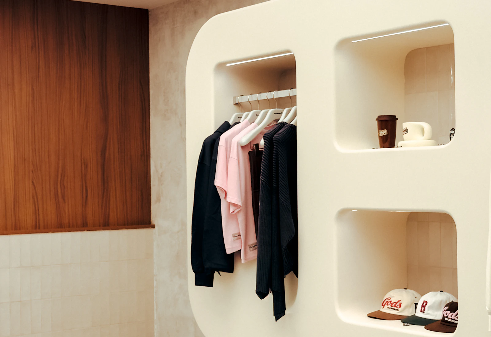
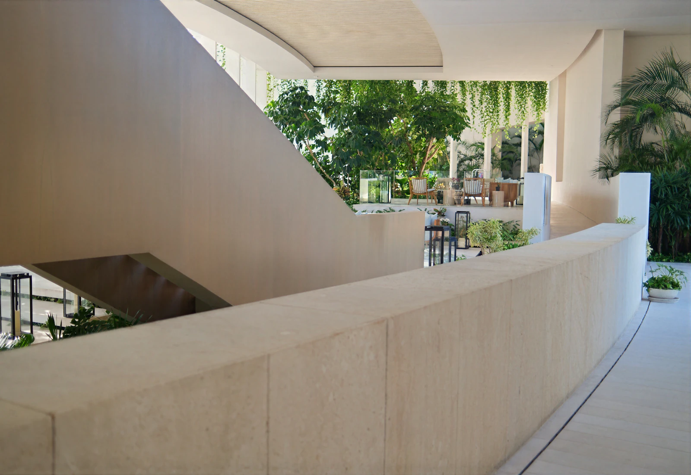
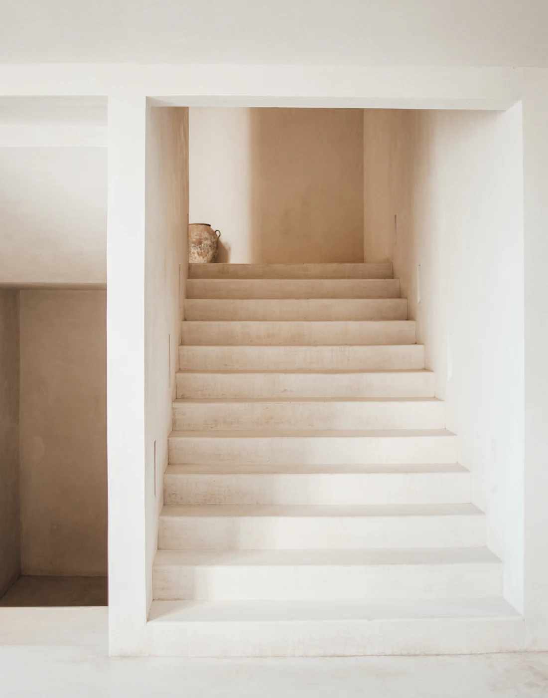

One Material Language Across the Built Environment.
The same finish family runs from the elevation to the entrance to the bespoke element inside — engineered differently for each, and reading as one material throughout.

01 — Building Façades
A distinctive architecturalidentity from the outside.
The elevation is where the material has to hold up at distance, in changing light, and across repetition. MarmoFiber is developed as a façade family rather than a single panel, so the reading stays consistent across the whole face of a building.
02 — Exterior Wall Cladding
Material character at architectural scale.
Cladding is a coordination problem as much as an aesthetic one: panel sizes, joints, returns, corners, interfaces with glazing and metal.
Because the panels are made rather than cut from a block, the setting-out can follow the drawing instead of the other way around.
- Panel strategyDeveloped with the elevation, not applied to it.
- Joints and revealsStudied as part of the material language.
- Corners and returnsDetailed so the finish continues around the form.

03 — Interior Feature Walls
Turn a wall into a material statement.
Inside, the surface is read from close range. Texture, tonal depth and the way the light falls across the face matter more than they do at fifty metres.
An interior feature wall is often where a project first commits to the material — and where the finish selection is worth making from a physical sample.


04 — Entrances and Reception Areas
Make the first material impression count.
An entrance is a short, concentrated piece of architecture. The surfaces are close, the lighting is controlled, and everyone who uses the building passes through it.
It is a good place for a bespoke element — a portal, a reveal, a reception face — developed in the same finish as the elevation outside.

05 — Retail and Hospitality
Designed for environments with a point of view.
Retail and hospitality interiors are rebuilt more often than buildings are. That puts pressure on lead time, repeatability and the ability to match a finish again later — all of which are manufacturing questions.





06 — Architectural Elements
Beyond the flat surface.
Profiles, reveals, relief, radii, screens, portals and one-off elements are developed through mould work — the part of the process Deko Egypt has been doing since 1995.
The point is not novelty. It is that a bespoke element and the flat panel next to it can be the same material, made the same way, approved from the same sample.

Custom development starts from your drawing. Send an elevation or a detail and we will come back with a sampling route.
Start a Project
Tell us where the surface has to land.
Share the application, the elevation or the interior, and the stage the project is at. We will come back with a material route and a sampling plan.